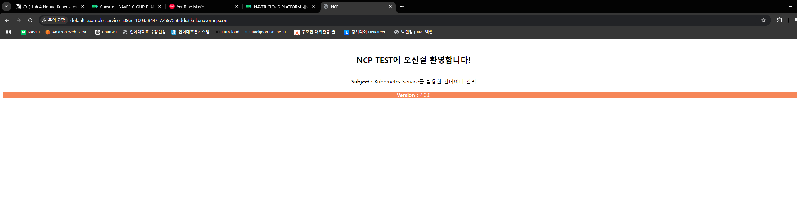
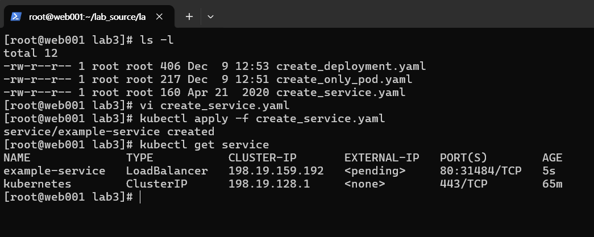
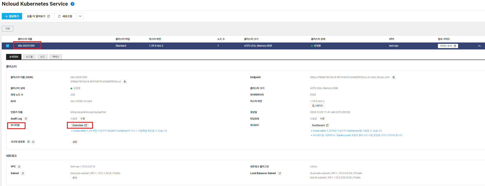
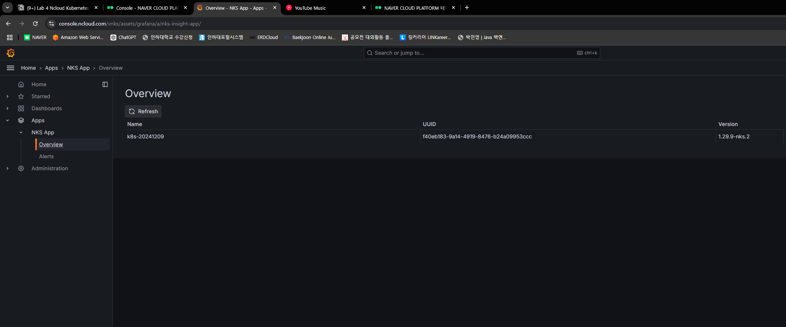
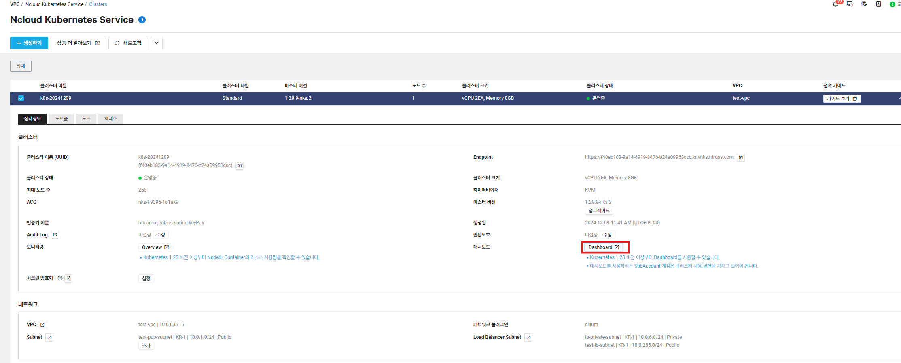
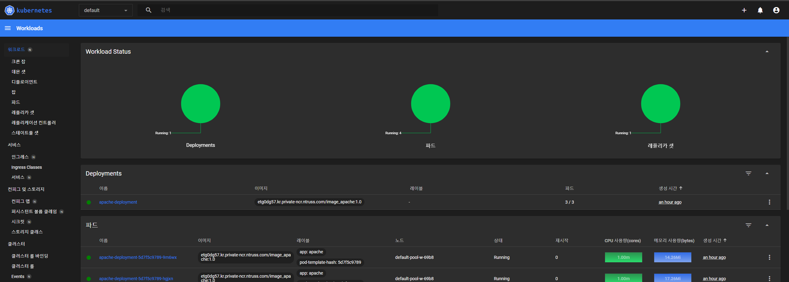

학습 목표
- 쿠버네티스 클러스터 생성
- 쿠버네티스 Pod 배포
- 쿠버네티스 Service 배포 및 확인
- 쿠버네티스 모니터링 확인
쿠버네티스란?
- Kubernetes(k8s)는 Google에서 Borg와 Omega를 개발/운영하면서 얻은 교훈을 기반으로 개발한 container scheduler로 2014년에 배포한 오픈소스 프로젝트이다
- Kubernetes는 container의 배포(scheduling), 운영(HA, Failover), 확장(Scaling)을 자동화하기 위한 플랫폼으로 설계되었다.

- Control Plane
- 클러스터의 상태를 유지하고 제어
- kube-api-server
- 사용자, 컨트롤 플레인과 통신
- 스케줄러
- 애플리케이션의 배포 가능한 각 구성 요소에 워커 노드를 할당
- 컨트롤 매니저
- 구성 요소 복제, 워커 노드 추적, 노드 장애 처리 등 클러스터 수준의 기능 수행
- 데이터 스토리지
- etcd는 클러스터 구성을 지속적으로 저장하는 안정적인 분산
- 워커 노드
- 컨테이너화된 애플리케이션을 실행하는 시스템
- 애플리케이션에 서비스를 실행, 모니터링, 제공하는 작업은 다음과 같은 구성요소로 수행
- Kubelet
- API 서버와 통신하고 노드에서 컨테이너를 관리
- Kubeproxy
- 애플리케이션 간에 네트워크 트래픽을 분산 및 연결
- Kubelet

- Control Plane
쿠버네티스의 핵심 개념 - Pod
- 파드는 쿠버네티스 애플리케이션의 기본 실행 단위이다.
- 쿠버네티스 객체 모델 중 만들고 배포할 수 있는 가장 작고 간단한 단위
- 단일 컨테이너만 동작하는 파드
- 함께 동작하는 작업이 필요한 다중 컨테이너가 동작하는 파드
1. LB private subnet 생성
2. NKS 클러스터 생성
- Services >Containers > Ncloud Kubernetes Service > 생성하기
- 클러스터 설정
- 노드풀 설정
- 생성 확인
3. Kubectl config 설정
- 스크립트 확인
1. ncp-iam-autthenticator설치 # cd ~ #curl -o ncp-iam-authenticator https://kr.object.ncloudstorage.com/nks-download/ncp-iam-authenticator/v1.0.0/linux/amd64/ncp-iam-authenticator 2. 바이너리 실행 권한 추가 # chmod +x ./ncp-iam-authenticator 3. $HOME/bin/ncp-iam-authenticator를 생성하고 $PATH에 추가 # mkdir -p /root/bin && cp ./ncp-iam-authenticator /root/bin/ncp-iam-authenticator && export PATH=$PATH:/root/bin 4. Shell Profile에 PATH를 추가 후 명령어가 잘 작동하는지 확인 # echo 'export PATH=$PATH:$HOME/bin' >> ~/.bash_profile # ncp-iam-authenticator help 5. API 인증키값 설정 # export NCLOUD_ACCESS_KEY=<사용자의 Access key> # export NCLOUD_SECRET_KEY=<사용자의 Secret key> # export NCLOUD_API_GW=https://ncloud.apigw.ntruss.com 6. 사용자 환경 홈 디렉터리의 .ncloud 폴더에 configure 파일 # mkdir .ncloud # vi ~/.ncloud/configure [DEFAULT] ncloud_access_key_id = ACCESSKEY ncloud_secret_access_key = SECRETKEY ncloud_api_url = https://ncloud.apigw.ntruss.com 7. ncp-iam-authenticator create-kubeconfig 명령을 사용하여 kubeconfig를 생성 # ncp-iam-authenticator create-kubeconfig --region KR --clusterUuid <cluster-uuid> > kubeconfig.yml 8. Kubeconfig 파일이 생성되면 kubectl 명령어를 테스트 # kubectl get namespaces --kubeconfig kubeconfig.yml 9. Kubeconfig 파일이 지정이 번거로울 경우, 아래와 같이 bash_profile 에 alias로 명시 # vi ~/.bash_profile alias kubectl='kubectl --kubeconfig="/root/kubeconfig.yml"' -> 파일 맨 밑에 alias 내용 추가 # source ~/.bash_profile # kubectl get namespaces
- 다음과같이web001서버에서ncp-iam-authenticator설치
- Ncp-iam-authenticator 바이너리 파일을 홈 디렉토리에 다운로드
cd ~ curl -o ncp-iam-authenticator https://kr.object.ncloudstorage.com/nks-download/ncp-iam-authenticator/v1.0.0/linux/amd64/ncp-iam-authenticator - 바이너리에 실행 권한 추가
chmod +x ./ncp-iam-authenticator - $HOME/bin/ncp-iam-authenticator를 생성하고 $PATH에 추가
mkdir -p /root/bin && cp ./ncp-iam-authenticator /root/bin/ncp-iam-authenticator && export PATH=$PATH:/root/bin - Shell Profile에 PATH를 추가 후 명령어가 잘 작동하는지 확인
echo 'exportPATH=$PATH:$HOME/bin' >> ~/.bash_profile ncp-iam-authenticator help
- Ncp-iam-authenticator 바이너리 파일을 홈 디렉토리에 다운로드
- 다음과 같이 IAM 인증을 위해 kube config를 생성합니다
- Kube config 생성 시 ncp-iam-authenticator를 통해 진행해야 합니다.
- 이때 ncp-iam-authenticator를 사용하기 위해서 먼저 API 인증키 값을 설정
- 홈페이지>마이페이지에서 API인증키 값을 확인 후, 아래 명령어에 맞게 넣어 실행
export NCLOUD_ACCESS_KEY=<사용자의Accesskey> export NCLOUD_SECRET_KEY=<사용자의Secretkey> export NCLOUD_API_GW=https://ncloud.apigw.ntruss.com export NCLOUD_ACCESS_KEY=0389DFB99F746878DB12 export NCLOUD_SECRET_KEY=050CE19EB83E86EEDD7EA995DB392AEE59CC3D1A export NCLOUD_API_GW=https://ncloud.apigw.ntruss.com
- 사용자 환경 홈 디렉토리의 .ncloud 폴더에 configure 파일
mkdir .ncloud vi ~/.ncloud/configure [DEFAULT] ncloud_access_key_id=ACCESSKEY ncloud_secret_access_key=SECRETKEY ncloud_api_url=https://ncloud.apigw.ntruss.com
ncp-iam-authenticator create-kubeconfig명령을 사용하여 kube config를 생성ncp-iam-authenticator create-kubeconfig --region KR --clusterUuid <cluster-uuid> >kubeconfig.yml- ClusterUUID는 Services>KubernetesService에서 생성한 Cluster를 클릭하면 클러스터 이름옆에서 확인 가능합니다
ncp-iam-authenticator create-kubeconfig --region KR --clusterUuid f40eb183-9a14-4919-8476-b24a09953ccc >kubeconfig.yml
- Kubeconfig 파일이 생성되면 kubectl 명령어를 테스트합니다
kubectl get namespaces --kubeconfig kubeconfig.yml
- Kubeconfig 파일이 지정이 번거로울 경우, 아래와 같이 bash_profile에 alias로 명시합니다
vi ~/.bash_profile source ~/.bash_profile kubectl get namespaces- 파일 맨 밑에 alias 추가
alias kubectl='kubectl --kubeconfig="/root/kubeconfig.yml"' - 쿠버네티스 연결 -완-
- 파일 맨 밑에 alias 추가
4. Container에 올라간 이미지를 이용하여 Pod 생성
- 이 이미지 사용 예정
- Container Registry의 Access/SecretKey를 저장한 Secret 오브젝트 생성
kubectl create secret docker-registry regcred \ --docker-server=<private-registry-end-point> --docker-username=<access-key-id> \ --docker-password=<secret-key> --docker-email=<your-email> kubectl get secretkubectl create secret docker-registry regcred \ --docker-server=etg0dg57.kr.private-ncr.ntruss.com --docker-username=0389DFB99F746878DB12 \ --docker-password=050CE19EB83E86EEDD7EA995DB392AEE59CC3D1A --docker-email=paul9119298@gmail.com kubectl get secret - Pod 생성
cd lab_source cd lab3
- create_only_pod.yaml 파일 생성 및 배포
- image : registry-name 값 변경
vi create_only_pod.yaml ------------------------- apiVersion: v1 kind: Pod metadata: name: apache-pod namespace: default spec: containers: - name: apache-pod image: <prviate-endpoint>/image_apache:1.0 imagePullSecrets: - name: regcredkubectl create -f create_only_pod.yaml kubectl get pods -o wide
- image : registry-name 값 변경
- Deployment 오브젝트로 Pod 생성
- create_deployment.yaml 파일 수정
- image: registry-name 값 변경
vi create_deployment.yaml ------------------------------ apiVersion: apps/v1 kind: Deployment metadata: name: apache-deployment spec: replicas: 3 selector: matchLabels: app: apache template: metadata: labels: app: apache spec: containers: - name: apache image: <private-endpoint>/image_apache:1.0 ports: - containerPort:80 imagePullSecrets: -name: regcredkubectl apply -f create_deployment.yaml kubectl get pods
- Deployment로 생성한 Pod에 Service 연결
- create_service.yaml 파일 생성
vi create_service.yaml --------------------- kind: Service apiVersion: v1 metadata: name:example-service spec: ports: - port: 80 targetPort: 80 selector: app: apache type: LoadBalancerkubectl apply -f create_service.yaml kubectl get service
로드밸런서 확인 및 서비스 접속 테스트
- Services > LoadBalancer>생성된 LB 확인
- 브라우저에서 LB 접속 정보(URL)로 접속
쿠버네티스 클러스터 모니터링
- Services > Containerservice >Kubernetes로 이동
- 운영중인 Kubernetes 클러스터 클릭
- 그라파나와 연동되어 워커노드 및 컨테이너 현황 모니터링 가능

- 대시보드 확인

